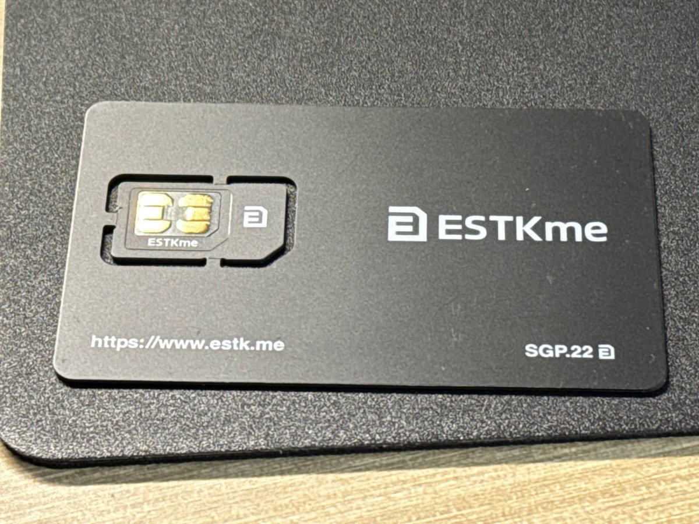
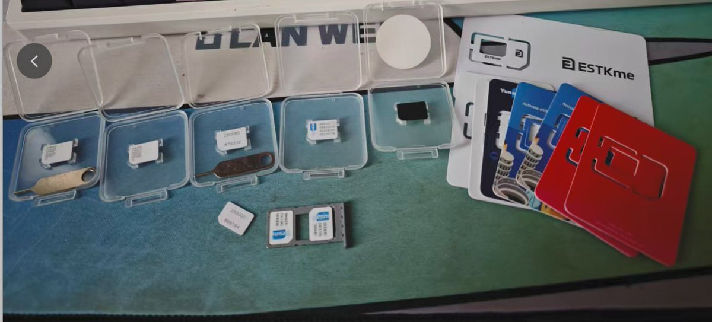
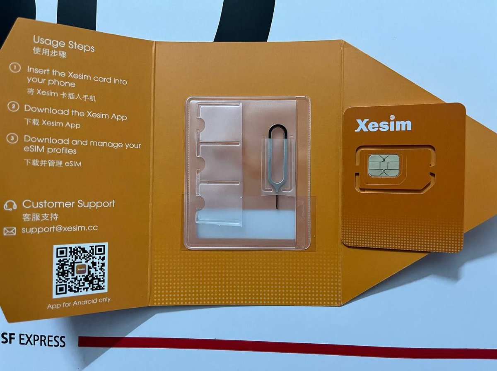
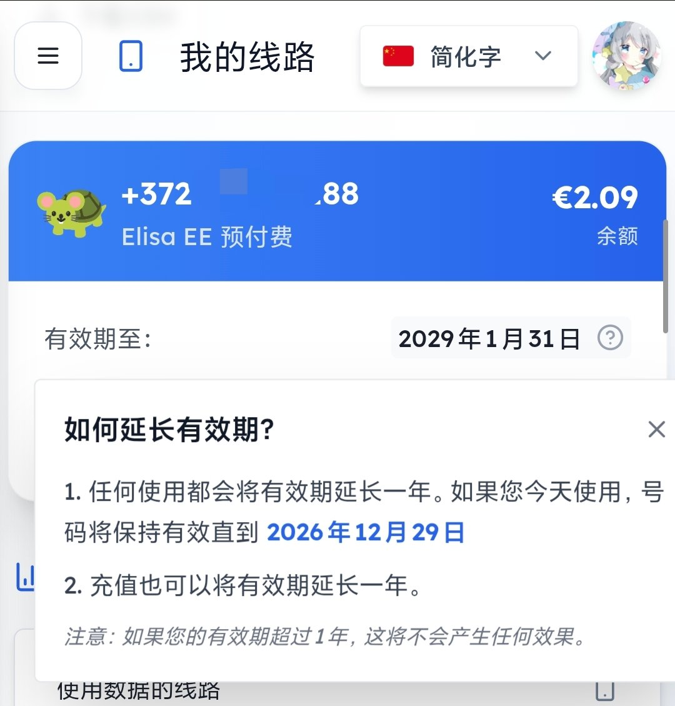
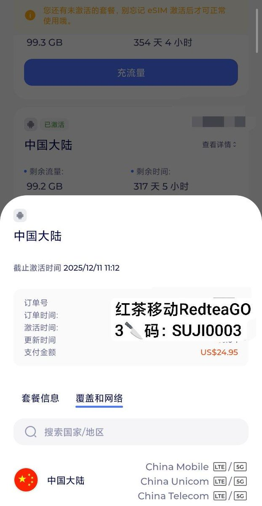
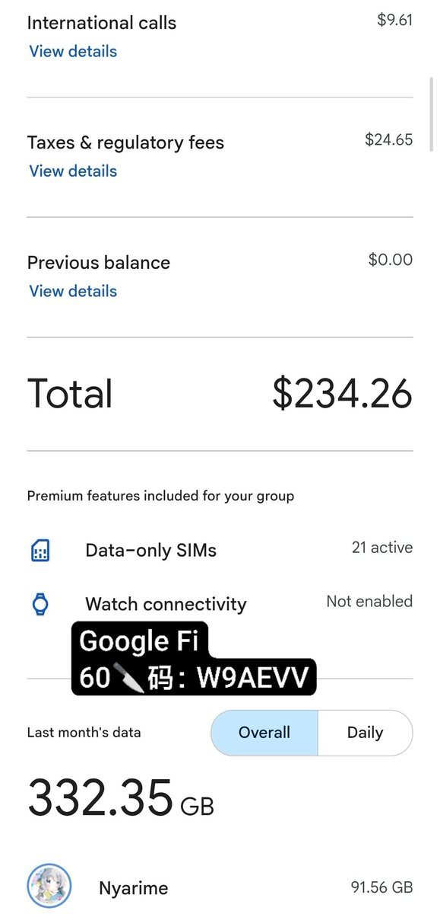

就像给电脑插随身WiFi，要在不支持的设备（如国行手机）上使用eSIM，就必须借助这类eUICC芯片～🤗
我在用的有eSTKme、9eSIM，这两家都可以用优惠码naixi打折。
在iOS体验最佳的是eSTK，用的是iPhone拆机eUICC；9eSIM经常有9块9的v0主打性价比，v3量大管饱，程序开源，市面上一堆盗版小白卡得益于此。
不过前段时间红茶移动拉黑了这些盗版小白卡，大部分eid都是以8986030开头的东信和平（ecp）卡，但9eSIM、Xesim这类品牌卡就没被影响。推上也有大佬推荐前5ber技术团队整的Xesim和Plan B做的Switch eSIM。这两家也是使用ecp，不过有做stk写卡功能，也是不赖。
不过ecp的可拔插eSIM还是有坑的。像日本NTT DOCOMO和美国部分运营商均不接受这些eid下卡，去年10月如果有上cuniq jp的ntt，就会发现ntt有eid白名单而au没有。不过eSIMcc联名9eSIM做的北京握奇35开头的euicc居然可以写Google Fi和Tello（T-Mobile MVNO），在奶昔论坛上兑换优惠券即可9.9包邮送到家！
不过这类可拔插eSIM如果要实现原生管理，需要刷模块来解决，比较折腾。建议还是用支持eSIM的外版iPhone食用最佳，也欢迎各位推友补充～

我在用的有eSTKme、9eSIM，这两家都可以用优惠码naixi打折。
在iOS体验最佳的是eSTK，用的是iPhone拆机eUICC；9eSIM经常有9块9的v0主打性价比，v3量大管饱，程序开源，市面上一堆盗版小白卡得益于此。
不过前段时间红茶移动拉黑了这些盗版小白卡，大部分eid都是以8986030开头的东信和平（ecp）卡，但9eSIM、Xesim这类品牌卡就没被影响。推上也有大佬推荐前5ber技术团队整的Xesim和Plan B做的Switch eSIM。这两家也是使用ecp，不过有做stk写卡功能，也是不赖。
不过ecp的可拔插eSIM还是有坑的。像日本NTT DOCOMO和美国部分运营商均不接受这些eid下卡，去年10月如果有上cuniq jp的ntt，就会发现ntt有eid白名单而au没有。不过eSIMcc联名9eSIM做的北京握奇35开头的euicc居然可以写Google Fi和Tello（T-Mobile MVNO），在奶昔论坛上兑换优惠券即可9.9包邮送到家！
不过这类可拔插eSIM如果要实现原生管理，需要刷模块来解决，比较折腾。建议还是用支持eSIM的外版iPhone食用最佳，也欢迎各位推友补充～






在国内玩eSIM很简单，大致分三类：保号型、流量型、全能型。手机需支持eSIM，国行请选购9eSIM、eSTK（用naixi可打折）
50块长期保号：giffgaff（+44）、eSIMgg（+372）等
百元流量管一年：红茶移动RedteaGO、亿点连接BC eSIM等
上台配漫游套餐：CMHK（配自由圈A双不限）等港澳卡、Google Fi等境外卡。 https://t.co/2clWIQmoe0
50块长期保号：giffgaff（+44）、eSIMgg（+372）等
百元流量管一年：红茶移动RedteaGO、亿点连接BC eSIM等
上台配漫游套餐：CMHK（配自由圈A双不限）等港澳卡、Google Fi等境外卡。 https://t.co/2clWIQmoe0